From statistical model to insurance tariff: a motor insurance case study
Source:vignettes/motor-pricing-case-study.Rmd
motor-pricing-case-study.RmdA motor insurer is reviewing its expected claims cost. The fitted model gives different rates for neighbouring vehicle-value bands, and some geographic relativities are based on very few claims. Can a smoother tariff retain useful risk differences without materially changing the risk premium for many policies?
This is one way to combine the package’s building blocks. The target is technical risk premium (expected claims cost), before expenses, margin, taxes or commercial adjustments.
Portfolio experience
The bundled motor data illustrate individual analyses but do not contain the policy histories and periods needed here. This portfolio is synthetic. Some policies recur and share a policy-level risk effect. Vehicle value is associated with fuel type and vehicle age. Claim frequency rises faster above 45,000 in vehicle value. Claim amounts are right skewed. Later years have higher claim costs and a shift in one region’s frequency. The candidate tariff is not part of the data-generating process.
Reproduce the synthetic portfolio
set.seed(1204)
n <- 850
policies <- data.frame(
policy_id = seq_len(n),
driver_age = sample(20:75, n, replace = TRUE),
vehicle_age = sample(0:16, n, replace = TRUE),
fuel = factor(sample(c("Petrol", "Hybrid", "Electric"), n, TRUE,
prob = c(.70, .20, .10))),
region = factor(sample(c("Urban", "Suburban", "Rural", "Island"), n, TRUE,
prob = c(.45, .32, .20, .03)),
levels = c("Urban", "Suburban", "Rural", "Island")),
bonus = factor(sample(1:4, n, TRUE), levels = 1:4),
latent_risk = rnorm(n, sd = .27)
)
policies <- policies |>
mutate(vehicle_value = round(pmin(73500, pmax(1500,
rlnorm(n(), log(28500), .52) - 950 * vehicle_age + 10500 * (fuel != "Petrol")
))))
motor <- bind_rows(lapply(2020:2025, function(calendar_year) {
policies |>
filter(runif(n()) < .86) |>
mutate(
year = calendar_year,
driver_age = driver_age + year - 2020,
vehicle_age = vehicle_age + year - 2020,
exposure = runif(n(), .15, 1),
frequency = exp(-2.2 + .00055 * (driver_age - 47)^2 +
.50 * log1p(vehicle_value / 20000) +
1.10 * (pmax(vehicle_value - 45000, 0) / 30000)^2 -
.15 * as.integer(bonus) + .25 * (region == "Island") -
.15 * (region == "Rural") +
.32 * (region == "Suburban" & year >= 2023) + latent_risk),
nclaims = rpois(n(), exposure * frequency),
cost = 1550 * (1 + vehicle_value / 58000) * 1.05^(year - 2020),
amount = rgamma(n(), shape = 1.25 * nclaims, scale = cost / 1.25)
) |>
select(-latent_risk, -frequency, -cost)
}))
train <- filter(motor, year < 2025)
# Do not use 2025 outcomes to choose models, bands or adjustments.Is an area’s high risk premium driven by many claims or expensive claims? Compare claims per exposure-year, average cost per claim and total claims cost per exposure-year. Read the rates alongside exposure, especially for Island. These are marginal summaries; the mix of cars and drivers can differ by area.
area <- factor_analysis(train, risk_factors = "region", claim_count = "nclaims",
claim_amount = "amount", exposure = "exposure")
autoplot(area, metrics = c("frequency", "average_severity", "risk_premium"),
decimal_mark = ".")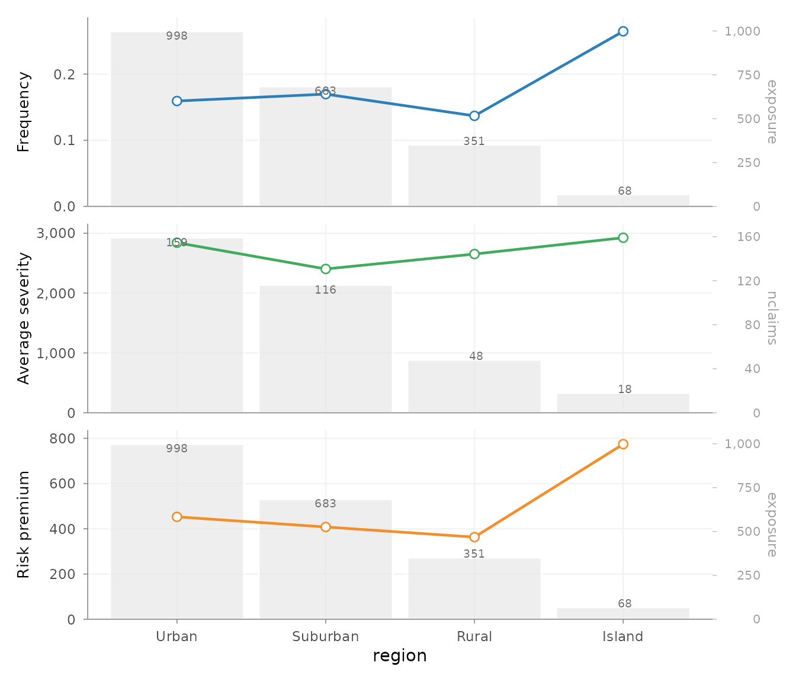
A few large losses can pull the mean far above the median. The severity plot uses only periods with exactly one claim, so each point is an individual claim amount, rather than a total for several claims. It describes that subset only. The orange circle marks the mean and the blue diamond marks the median.
plot_severity_distribution(
data = filter(train, nclaims == 1),
claim_amount = "amount",
all_claims_label = "Single-claim periods",
x_label = "Claim amount",
point_method = "quasirandom"
)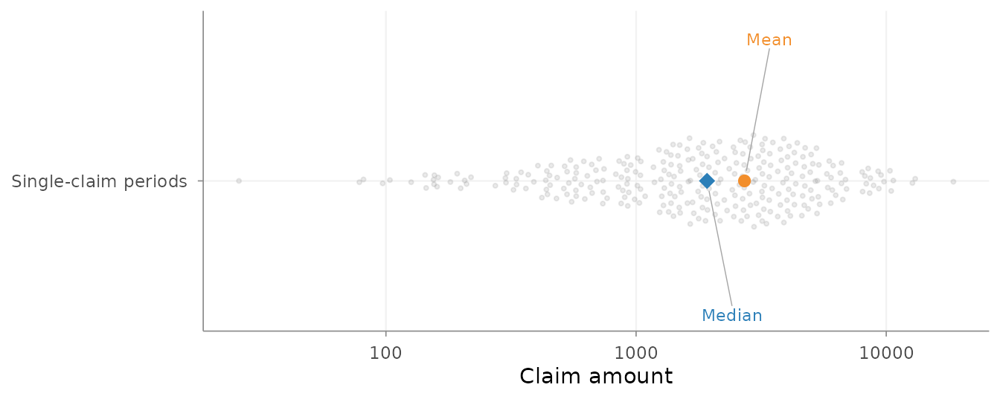
Vehicle value and the initial models
Is the relationship with vehicle value continuous, or do a few bands describe it adequately? A marginal frequency GAM can help find a candidate set of bands. It is not the adjusted vehicle-value effect. Round vehicle values to the nearest 2,500 before pooling claims and exposure and fitting the GAM. Each dot shows the observed claim frequency at a rounded value. The curve shows the fitted frequency, and the vertical lines mark the derived segment boundaries.
value_gam <- risk_factor_gam(
train,
risk_factor = "vehicle_value",
claim_count = "nclaims",
exposure = "exposure",
round_risk_factor = 2500
)
value_segments <- derive_tariff_segments(value_gam, segmentation_penalty = 8,
seed = 1205, max_iterations = 500,
population_size = 60)
autoplot(value_segments, show_observations = TRUE) +
labs(x = "Vehicle value", y = "Claims per exposure-year")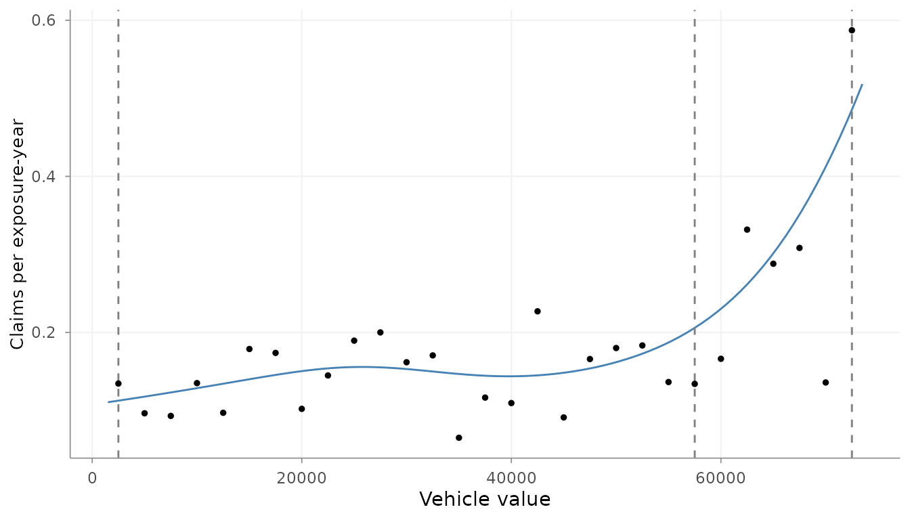
The fitted frequency rises more steeply in the upper range, where the
candidate split separates the highest values. Use
add_tariff_segments() to add the derived bands to the
portfolio. Here they are an exploratory alternative. The models use
pre-specified rounded bands, so each historical validation window can
use the same definitions without learning them from later years.
train <- add_tariff_segments(train, value_segments, name = "value_segment")
count(train, value_segment)
#> value_segment n
#> 1 [2.5e+03,5.75e+04] 3383
#> 2 (5.75e+04,7.25e+04] 259
value_breaks <- c(0, 7500, 15000, 25000, 35000, 50000, 75000)
add_model_bands <- function(data) {
data |>
mutate(
value_band = cut(vehicle_value, value_breaks, include.lowest = TRUE, dig.lab = 8),
driver_band = cut(driver_age, c(0, 30, 45, 60, 100))
)
}
train <- add_model_bands(train)The frequency model predicts claim counts over each policy period, because the formula contains a log-exposure offset. Dividing by exposure gives an annualised frequency. The severity model predicts mean cost per claim and weights a policy period by its number of claims. Multiplying the two model predictions gives expected loss over the period. Discretising continuous predictors is useful if the result needs to be delivered as a rate table; it is not a requirement for statistical modelling.
frequency <- glm(
nclaims ~ value_band + driver_band + bonus + region + fuel + offset(log(exposure)),
family = poisson(), data = train
)
with_claims <- filter(train, nclaims > 0)
severity <- glm(
I(amount / nclaims) ~ value_band + fuel,
family = Gamma(link = "log"), weights = nclaims, data = with_claims
)
model_performance(frequency, metrics = c("gini", "normalized_gini"))
#> # Comparison of Model Performance Indices
#>
#> Model | AIC | BIC | RMSE | Residual_Deviance | Gini | Normalized_Gini
#> ----------+----------+----------+-------+-------------------+-------+----------------
#> frequency | 2252.358 | 2357.763 | 0.309 | 1571.251 | 0.206 | 0.223Which fitted effects are stable?
Compare the adjusted frequency relativities with the observed marginal relativities. Both are relative to the reference level, but the observed series does not adjust for the other predictors. A gap is a reason to check portfolio composition, not by itself a model defect.
region_table <- rating_table(frequency, exposure = FALSE) |>
add_factor_experience(data = train, exposure = "exposure", claim_count = "nclaims")
autoplot(region_table, risk_factor = "region")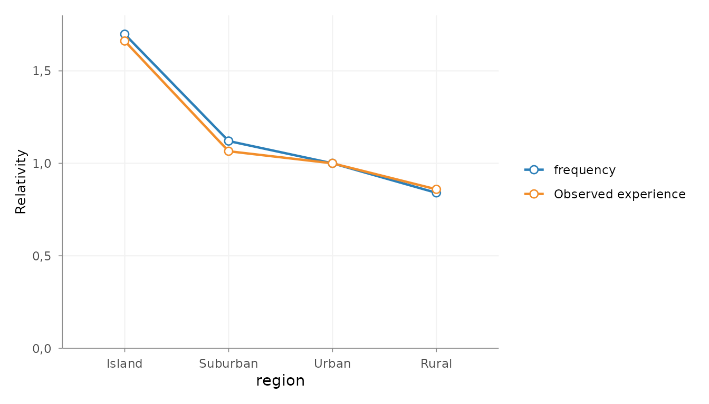
The row bootstrap asks how sensitive the geographic terms are to a different sample from these records. It does not account for dependence between records of a policy. The separate annual fits ask whether the same geographic contrasts look similar across years. Read both alongside exposure and intervals. Neither proves that a region’s underlying risk has changed.
boot <- coefficient_stability(frequency, n_resamples = 60, seed = 1206,
show_progress = FALSE)
periods <- coefficient_stability(frequency, method = "period", period = "year")
region_terms <- grep("^region", names(coef(frequency)), value = TRUE)
filter(summary(boot), term %in% region_terms)
#> term estimate bootstrap_mean bias bootstrap_se lower
#> 1 regionSuburban 0.1137485 0.09867867 -0.01506984 0.1177667 -0.10655075
#> 2 regionRural -0.1738609 -0.16821496 0.00564591 0.1633957 -0.48336881
#> 3 regionIsland 0.5295253 0.45464826 -0.07487707 0.2142077 0.03051817
#> upper n_successful n_requested success_rate
#> 1 0.2896742 60 60 1
#> 2 0.1875925 60 60 1
#> 3 0.7947666 60 60 1
island_experience <- train |>
filter(region == "Island") |>
summarise(nclaims = sum(nclaims), exposure = sum(exposure), .by = year)
island_fits <- periods$estimates |>
filter(term == "regionIsland") |>
select(year = period, relativity)
left_join(island_experience, island_fits, by = "year")
#> year nclaims exposure relativity
#> 1 2020 2 14.67616 1.2340566
#> 2 2021 5 14.14139 1.7724956
#> 3 2022 7 14.46513 3.4091141
#> 4 2023 2 13.10706 1.1594607
#> 5 2024 2 11.61269 0.7568541
autoplot(periods, terms = "regionSuburban", scale = "relativity") +
labs(title = "Suburban relative to Urban", colour = NULL) +
guides(colour = "none")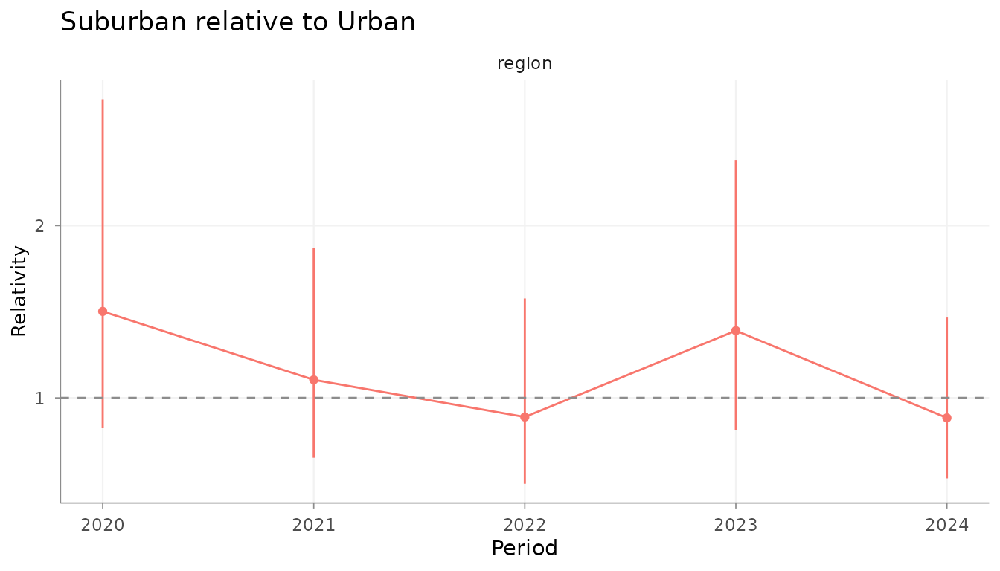
Across the five training years, Island records only 18 claims. Read the annual Island estimates alongside the local exposure and claim counts. The plot asks a different question: does the Suburban frequency effect, relative to Urban, look stable from year to year? The dashed line at 1 means no difference. Read apparent shifts alongside the intervals before treating them as lasting changes.
A candidate frequency tariff
Suppose vehicle value should not reduce claim frequency in this tariff. An increasing smoothing allows flat sections but not a drop as vehicle value rises. The proposed bands keep their original boundaries. This shape is an illustrative choice, not a general rule for motor insurance.
proposal <- frequency |>
prepare_refinement(data = train) |>
add_smoothing("value_band", "vehicle_value", breaks = value_breaks,
smoothing = "increasing", k = 5, weights = "exposure")
autoplot(proposal)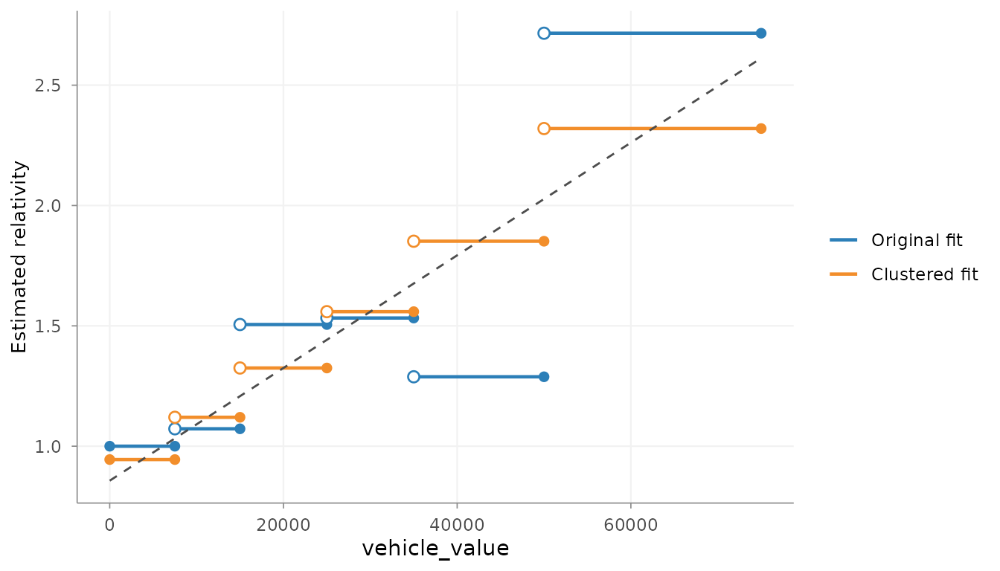
value_only <- refit(proposal, intercept_only = TRUE)For a second candidate, suppose additional information supports a small increase at higher vehicle values. Compare the edited curve with the original smoothing: the adjustment starts at 35,000 and builds towards the upper end.
edited <- proposal |>
edit_smoothing(model_variable = "value_band", from = 35000, adjustment = 1.02,
transition = "linear")
autoplot(edited, variable = "value_band", show_initial_smoothing = TRUE)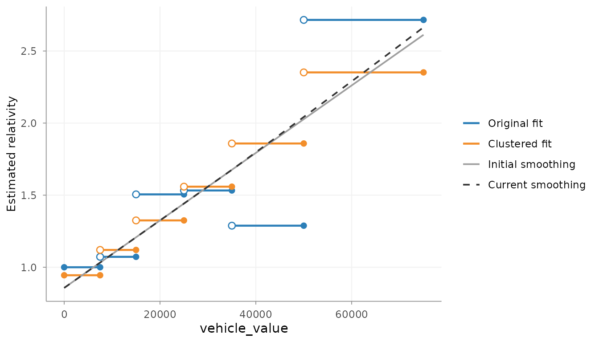
Suppose also that a higher bonus level should not increase frequency. The fitted relativities already decrease in this example, so the two lines overlap: the monotonicity check does not require a change.
ordered_bonus <- edited |>
add_monotonicity("bonus", direction = "decreasing", weights = "exposure")
autoplot(ordered_bonus, variable = "bonus")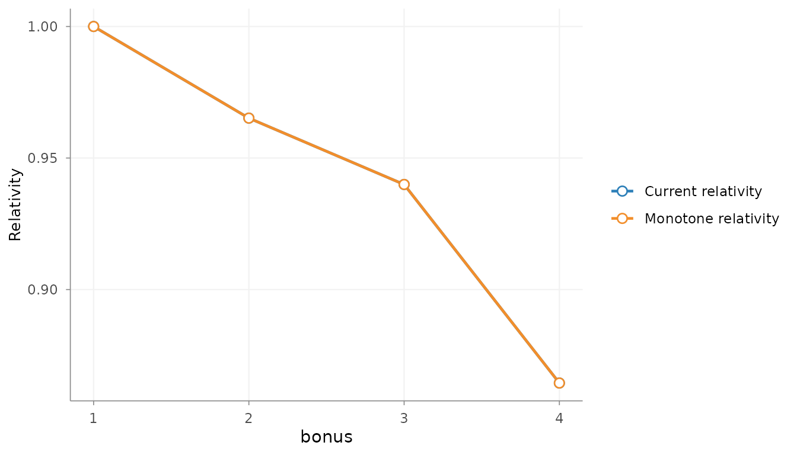
To reduce regional differences, shrink the regional log-relativities towards a common centre with the same credibility weight for each region.
combined <- ordered_bonus |>
add_shrinkage("region", credibility = .75, weights = "exposure")
autoplot(combined, variable = "region")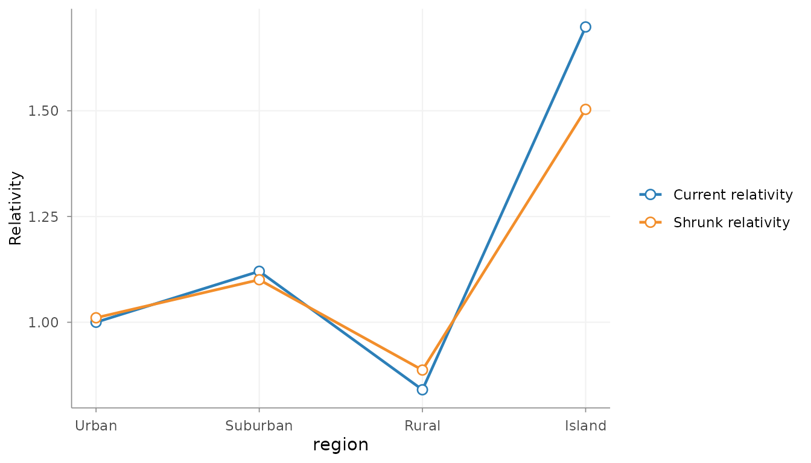
candidate <- refit(combined, intercept_only = TRUE)Before reviewing individual changes, align the two models’ total expected loss on the training portfolio. This keeps the audit focused on how the risk premium is redistributed.
Align the expected loss level on the training portfolio
pricing <- extract_model_data(candidate) |>
add_prediction(frequency, candidate, severity,
predictions = c("original", "candidate", "severity")) |>
mutate(original_loss = original * severity, candidate_loss = candidate * severity)
level <- pricing |>
summarise(factor = sum(original_loss) / sum(candidate_loss)) |>
pull(factor)
candidate <- adjust_intercept(candidate, factor = level)Who would see a change?
Audit the combined candidate on the original training portfolio. A small portfolio change can hide sizeable increases and decreases for individual records. Because severity and exposure are held fixed, each record’s percentage change in expected claims cost is also its percentage change in predicted frequency. The portfolio’s aggregate frequency need not be identical after aligning aggregate expected losses.
impact <- audit_refinement(candidate, exposure = "exposure",
risk_factors = "region", individual = TRUE)
impact$portfolio
#> metric before after change change_ratio exposure records
#> 1 fitted_rate 0.162382 0.160133 -0.002249041 -0.01385031 2099.986 3642
impact$impact
#> risk_factor level model_points records exposure before after
#> 1 region Urban 188 1733 997.97892 0.1593220 0.1592372
#> 2 region Suburban 154 1176 683.40294 0.1697388 0.1625972
#> 3 region Rural 108 615 350.60164 0.1369075 0.1449741
#> 4 region Island 28 118 68.00244 0.2646964 0.2266703
#> change change_ratio
#> 1 -8.479098e-05 -0.0005321988
#> 2 -7.141631e-03 -0.0420742409
#> 3 8.066544e-03 0.0589196577
#> 4 -3.802610e-02 -0.1436592889
over_ten <- filter(impact$individual_impact$thresholds, threshold == .10)
select(over_ten, increase, decrease, either)
#> increase decrease either
#> 1 0.1571254 0.3522978 0.5094232
autoplot(impact)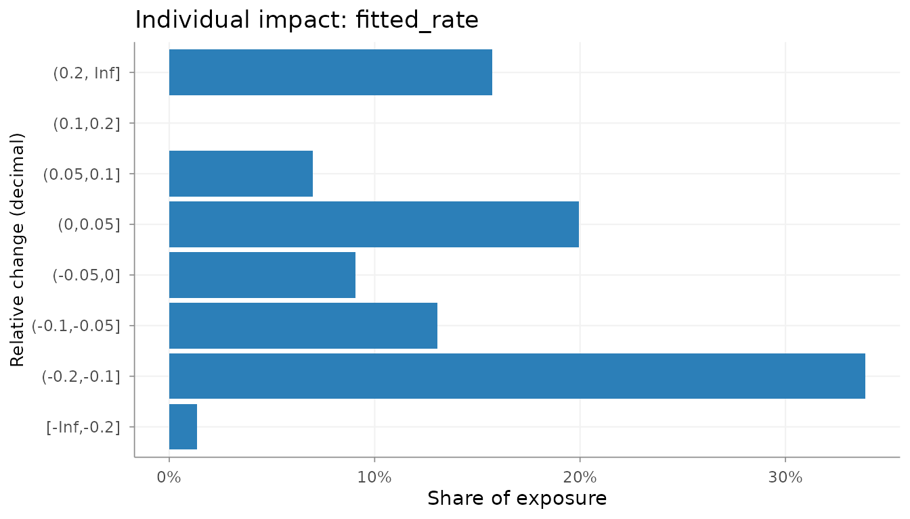
The combined candidate changes the technical risk premium by more than 10% in either direction for 51% of training exposure, even though the total expected loss is unchanged on that portfolio. The band plot makes those shifts visible on both sides of zero. This is a change in expected claims cost, not in commercial premiums.
Can the model predict future periods?
For a check of the original frequency specification, a random split by policy keeps all records of each policy together. Rolling validation instead uses only earlier years for fitting and the next year for scoring. A policy may legitimately recur in a later year in this second exercise. The two scores answer different questions. Rolling deviance is a total, so compare windows alongside their test sizes; it can be useful to divide by the number of rows.
set.seed(1207)
held_out <- validate_performance(
frequency, train, sampling = "split", cluster = "policy_id",
sample_fraction = .80, n_resamples = 20, metrics = c("deviance", "gini"),
show_progress = FALSE
)
summary(held_out$scores)
#> deviance gini
#> Min. :284.3 Min. :-0.01585
#> 1st Qu.:317.2 1st Qu.: 0.09181
#> Median :328.7 Median : 0.12903
#> Mean :328.0 Mean : 0.13220
#> 3rd Qu.:335.9 3rd Qu.: 0.19740
#> Max. :372.6 Max. : 0.25225
validate_performance(
frequency, train, sampling = "rolling", time = "year", initial = 2,
metrics = c("deviance", "gini"), show_progress = FALSE
)
#> iteration train_start train_end test_start test_end n_train n_test deviance
#> 1 1 2020 2021 2022 2022 1442 726 323.7895
#> 2 2 2020 2022 2023 2023 2168 744 316.6368
#> 3 3 2020 2023 2024 2024 2912 730 342.4166
#> gini
#> 1 0.1368401
#> 2 0.1749085
#> 3 0.2215731
# This fixed-model comparison uses estimation years, so it is descriptive.
autoplot(calibration_analysis(frequency, train, by = "year", conf_level = .95))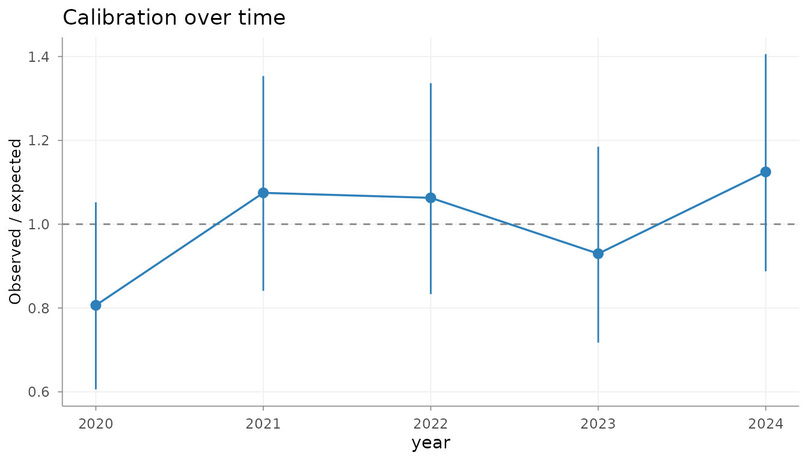
Now score all three specifications on 2025, without
any further adjustments. The rating tables carry the tariff definitions
to the evaluation records; segment_sources connects the new
bands to vehicle value. add_prediction() adds the expected
claim counts and the common severity prediction to the same records.
Frequency deviance scores the claim-count predictions, while separate
observed-to-expected (O/E) ratios show whether the tariffs predict the
right level of claim counts and total loss. A ratio above one means
observed experience exceeded the prediction.
Prepare the evaluation data and the three tariffs
test <- motor |>
filter(year == 2025) |>
add_model_bands()
models <- list(Original = frequency, Smoothed = value_only, Candidate = candidate)
tariff_tables <- lapply(models, rating_table, exposure = FALSE)
tariffs <- list(
Original = as_tariff(tariff_tables$Original, unmatched = "error"),
Smoothed = as_tariff(tariff_tables$Smoothed, unmatched = "error",
segment_sources = c(vehicle_value_smooth = "vehicle_value")),
Candidate = as_tariff(tariff_tables$Candidate, unmatched = "error",
segment_sources = c(vehicle_value_smooth = "vehicle_value"))
)
test <- add_prediction(
test, tariffs$Original, tariffs$Smoothed, tariffs$Candidate, severity,
predictions = c(names(tariffs), "expected_severity")
)
pred_count <- select(test, all_of(names(tariffs)))
pred_loss <- transmute(test, across(all_of(names(tariffs)), ~ .x * expected_severity))#> Tariff Factor_levels Frequency_deviance Claim_count_OE Loss_OE
#> 1 Original 21 332.7789 1.143658 1.132734
#> 2 Smoothed 21 333.6000 1.154401 1.129325
#> 3 Candidate 21 333.3343 1.171832 1.145272
calibration_analysis(frequency, test, conf_level = .95)
#> Observed Expected OE N Exposure Upper Lower Conf_level
#> 1 78 68.20222 1.143658 733 413.6245 1.427337 0.904014 0.95
#> Interval_method
#> 1 poissonAcross the three tariffs, claim-count O/E is around 1.15, while loss O/E is around 1.13. Both ratios exceed one. Check claim counts and compare average cost per claim separately before deciding what needs to change. The displayed count interval applies to the original tariff. It treats predictions as fixed and assumes independent Poisson counts; it does not include parameter uncertainty or dependence from recurring policies.
All three tariffs still have 21 factor levels, excluding the intercept. The refinement changes the relativity pattern; it does not shorten the tariff table.
Can the alternatives still rank future loss cost? The concentration plot uses predicted loss per exposure-year. Lift shows observed and predicted rates relative to their respective portfolio averages. The ordered Lorenz plot asks a different question: do the records that the candidate prices higher relative to the original also account for a larger share of losses than the original expected?
ranking <- discrimination_analysis(
observed = test$amount, predicted = pred_loss, exposure = test$exposure,
reference = pred_loss$Original, n_groups = 5
)
ranking$summary[c("Model", "Gini", "Normalized_Gini", "Relative_Gini")]
#> Model Gini Normalized_Gini Relative_Gini
#> 1 Original 0.3521816 0.3706460 0.00000000
#> 2 Smoothed 0.3314663 0.3488447 -0.05387948
#> 3 Candidate 0.3305787 0.3479105 -0.02424254
autoplot(ranking)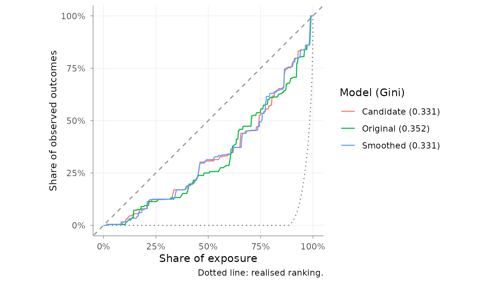
autoplot(ranking, type = "lift")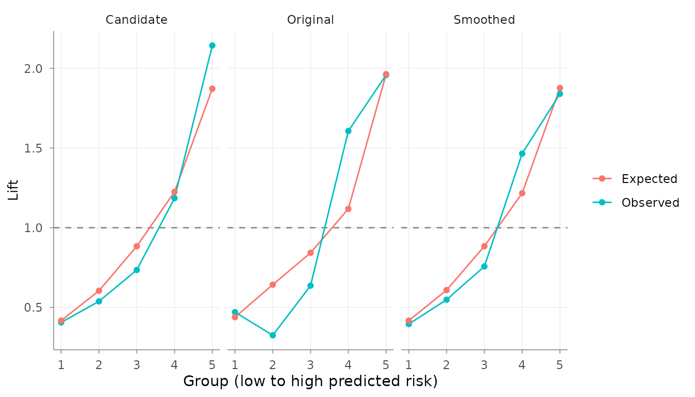
autoplot(ranking, type = "ordered_lorenz")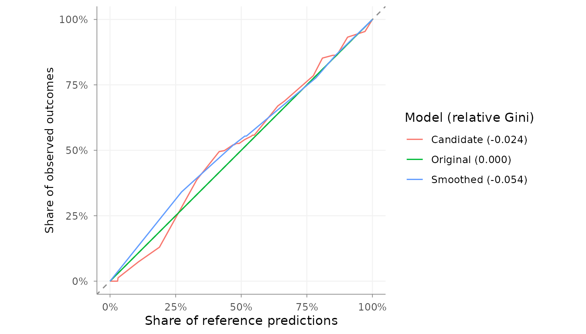
What would justify adopting a candidate?
On the 2025 holdout, the three tariffs have similar frequency deviance and loss Gini. The original has slightly lower deviance and a slightly higher Gini, but one year does not tell us whether those differences will persist. Similar Gini values also do not imply good calibration: all three underpredict total loss in 2025.
The decision is whether smoother effects and less reliance on uncertain regional estimates justify the individual changes seen in the audit. This example gives no reason to adopt the combined candidate on predictive performance alone. In practice, investigate the shortfall in loss predictions and the largest individual changes before making that decision.